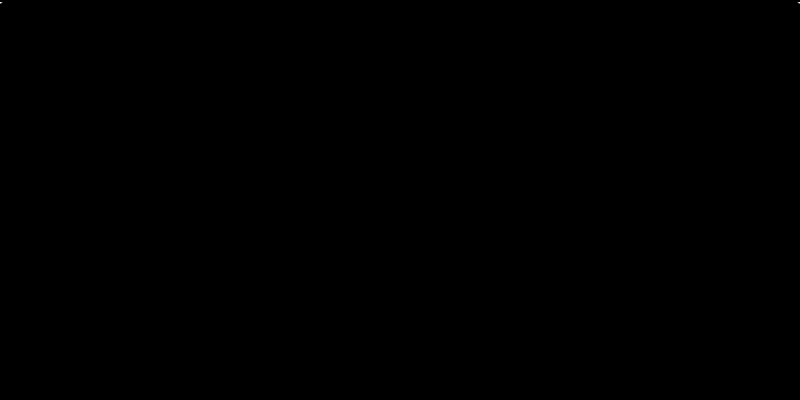
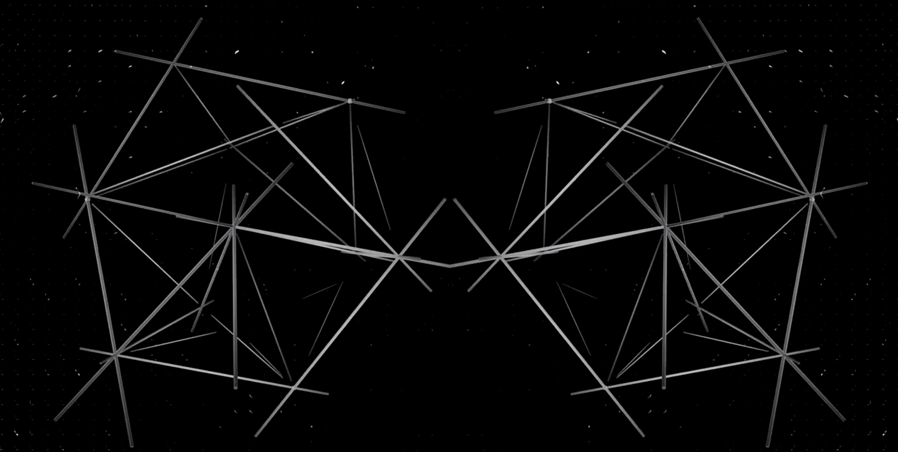
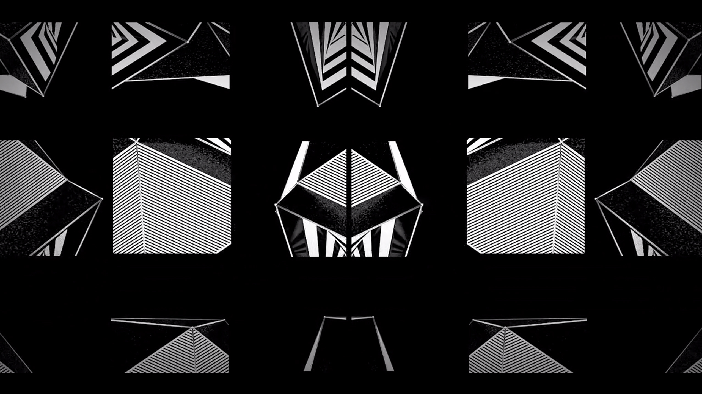
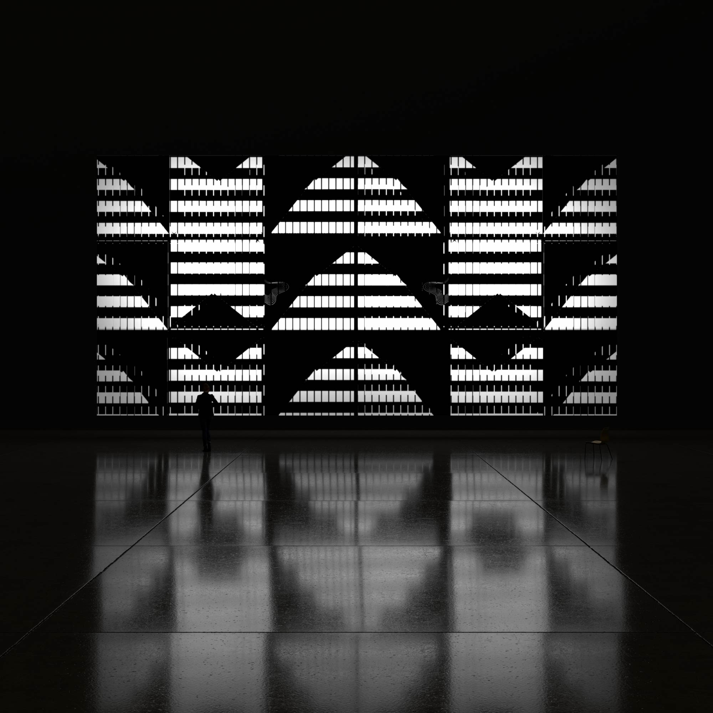
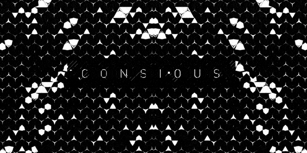

Zero Point : Projection installation
Design, Direction, Concept, Animation
Zero Point is A monochromatic art installation. A visual trip exploring a fusion of graphic design fundamentals DMT and sacred geometry. Resulting mathematical journey into the geometry, subdivision and chaos.
The aim was to create visuals that may be close, but so far from shapes seen on a DMT experience, using principles of sacred geometry and golden ratios. The whole project was projected along with a sound design in the centre of Barcelona, Las Ramblas for design week.
Sound design by Echo Lab
Software used
Cinema 4d, After Effects, Adobe illustrator
Projected on a 30ft wall in Barcelona - Lasted 6 months




